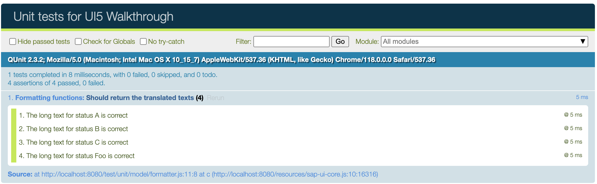
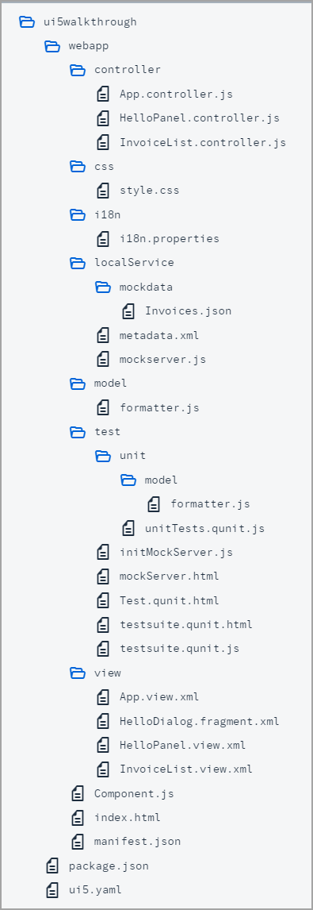

Actually, every feature that we added to the app so far, would require a separate test case. We have totally neglected this so far, so let's add a simple unit test for our custom formatter function from Step 22. We will test if the long text for our status is correct by comparing it with the texts from our resource bundle.
In this tutorial, we focus on a simple use case for the test implementation. If you want to learn more about QUnit tests, have a look at our Testing Tutorial tutorial, especially Step 2: A First Unit Test.

You can view and download all files at Walkthrough - Step 27.

We add a new folder unit under the test folder and
a model subfolder where we will place our formatter unit test. The
folder structure matches the app structure to easily find the corresponding unit
tests.
sap.ui.define([
"ui5/walkthrough/model/formatter",
"sap/ui/model/resource/ResourceModel",
], (formatter, ResourceModel) => {
"use strict";
QUnit.module("Formatting functions", {});
QUnit.test("Should return the translated texts", (assert) => {
const oResourceModel = new ResourceModel({
bundleUrl: sap.ui.require.toUrl("ui5/walkthrough/i18n/i18n.properties"),
supportedLocales: [
""
],
fallbackLocale: ""
});
const oControllerMock = {
getOwnerComponent() {
return {
getModel() {
return oResourceModel;
}
};
}
};
const fnIsolatedFormatter = formatter.statusText.bind(oControllerMock);
// Assert
assert.strictEqual(fnIsolatedFormatter("A"), "New", "The long text for Status A is correct");
assert.strictEqual(fnIsolatedFormatter("B"), "In Progress", "The long text for Status B is correct");
assert.strictEqual(fnIsolatedFormatter("C"), "Done", "The long text for Status C is correct");
assert.strictEqual(fnIsolatedFormatter("Foo"), "Foo", "The long text for Status Foo is correct");
});
});We create a new formatter.js file under webapp/test/unit/model where the unit test for the custom formatter is
implemented. The formatter file that we want to test is loaded as a dependency.
The formatter file just contains one QUnit module for our formatter function and one unit test for the formatter function. In the implementation
of the statusText function that we created in Step 22, we use the translated texts when calling the formatter.
As we do not want to test the UI5 binding functionality, we just use text in the test instead of a ResourceBundle.
Finally, we perform our assertions. We check each branch of the formatter logic by invoking the isolated formatter function with the values that
we expect in the data model (A, B, C, and everything else). We strictly compare the
result of the formatter function with the hard-coded strings that we expect from the resource bundle and give a meaningful error
message if the test should fail.
We create a new unitTests.qunit.js file under
webapp/test/unit/. This module will serve as the entry point
for all our unit tests. It will be referenced in the test suite that we will set up
later on.
Inside the unitTests.qunit.js file we import the unit test for
the custom formatter. This ensures that any tests related to the custom formatter
functionality will be included when running our unit tests.
sap.ui.define([
"./model/formatter"
]);We also need a generic test page that will be used to run individual tests. It
includes the sap/ui/test/starter/runTest.js script which is
responsible for loading the test suite configuration and starting the test.
Unlike with the UI5 bootstrap, this script only accepts the
data-sap-ui-resource-roots configuration where we need to
register our project-specific test namespace so that our modules can be loaded.
The page will be referenced in the test suite that we will create next.
<!DOCTYPE html>
<html>
<head>
<meta charset="utf-8">
<script
src="../resources/sap/ui/test/starter/runTest.js"
data-sap-ui-resource-roots='{
"test-resources.ui5.walkthrough": "./"
}'
></script>
</head>
<body class="sapUiBody">
<div id="qunit"></div>
<div id="qunit-fixture"></div>
</body>
</html>The testsuite.qunit.js file contains the configuration for our
test suite. Although it comes with a set of defaults, we recommend specifying the
used QUnit version to prevent potential future updates from breaking our tests.
Additionally, the sap_horizon theme is configured in the
ui5 section, where you can provide the UI5 runtime
configuration.
The test suite serves as the entry point for all tests within our project such as the
previously created unit/unitTests (The
.qunit.js extension is omitted and will be added
automatically during runtime). The previously created generic
Test.qunit.html file is referenced as the test
page and configured with query parameters so that individual
tests can be run. The placeholders {suite} and
{name} are replaced with the suite and test names respectively.
For more information, see Concept and Basic Setup.
sap.ui.define(() => {
"use strict";
return {
name: "QUnit test suite for UI5 Walkthrough",
defaults: {
page: "ui5://test-resources/ui5/walkthrough/Test.qunit.html?testsuite={suite}&test={name}",
qunit: {
version: 2
},
ui5: {
theme: "sap_horizon"
},
loader: {
paths: {
"ui5/walkthrough": "../"
}
}
},
tests: {
"unit/unitTests": {
title: "UI5 Walkthrough - Unit Tests"
}
}
};
});We also create a corresponding testsuite.qunit.html in the same
folder. This is the page we will open in the browser to see a list of all our tests
and run them by clicking on the test name.
It registers a resource root mapping for the test resources of our project and
references the testsuite.qunit module we created in the
previous step.
<!DOCTYPE html>
<html>
<head>
<meta charset="utf-8">
<script
src="../resources/sap/ui/test/starter/createSuite.js"
data-sap-ui-testsuite="test-resources/ui5/walkthrough/testsuite.qunit"
data-sap-ui-resource-roots='{
"test-resources.ui5.walkthrough": "./"
}'
></script>
</head>
<body>
</body>
</html>If we now open the webapp/test/testsuite.qunit.html file in the
browser and select unit/unitTests, we should see our test
running and verifying the formatter logic.
All unit tests are placed in the webapp/test/unit folder of the app.
The default naming convention for the test suite is
testsuite.qunit.html and
testsuite.qunit.js. When adding additional test
suites, the naming must follow the pattern
testsuite.<name>.qunit.html/testsuite.<name>.qunit.js.
Test files referenced in the test suite end with .qunit.js.
A unit test should be written for formatters, controller logic, and other individual functionality.
All dependencies are replaced by stubs to test only the functionality in scope.